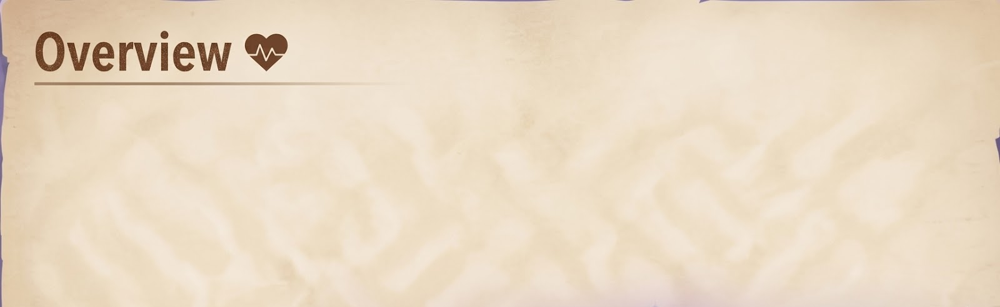
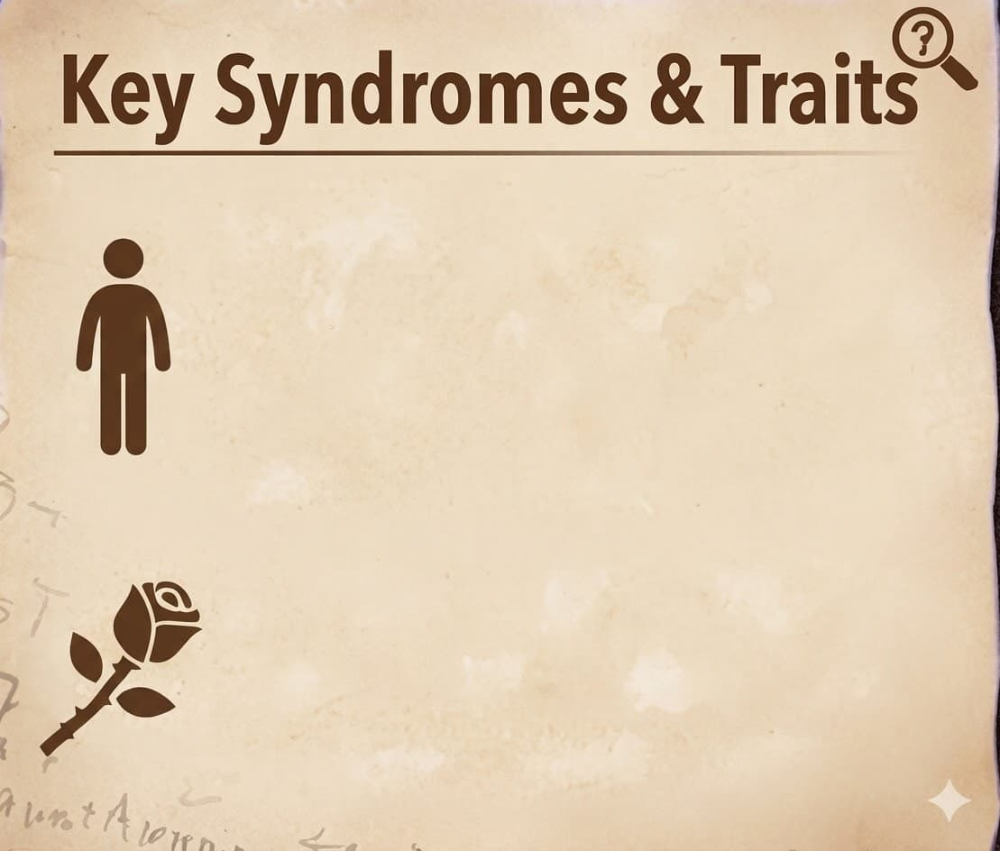
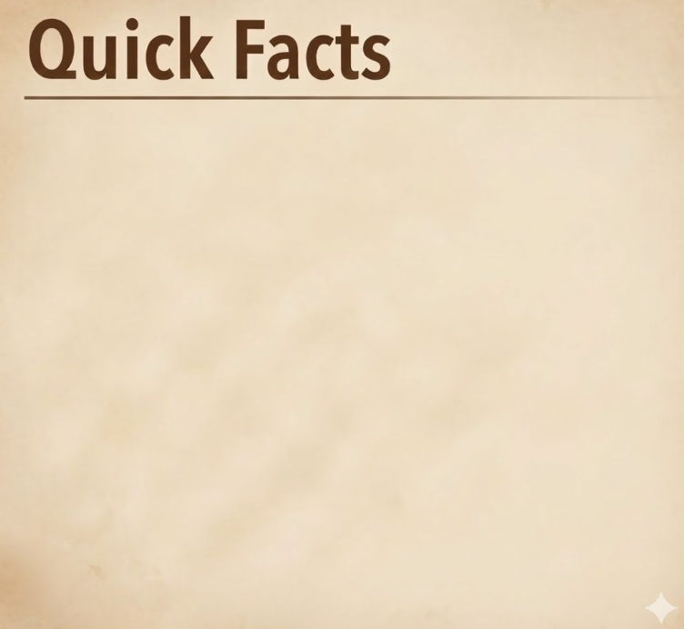
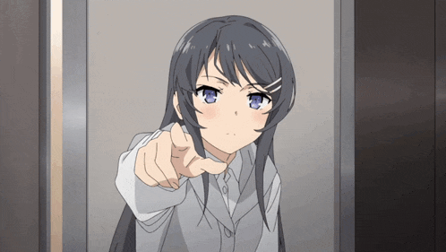
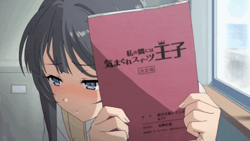
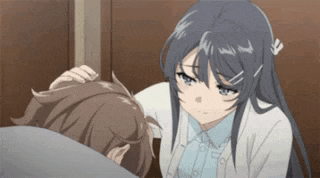

Sakurajima MAi
The Bunny Girl Who Only has eyes for one person

Sakurajima Mai is a third-year high school student and a former child star who returned to the entertainment industry. Famous for her cool beauty, she suffers from a reoccurring bout of Adolescence Syndrome that renders her invisible to everyone except a select few. Her strong-willed facade hides a vulnerable and deeply loyal heart.

Invisibility: A state of vanishing from common perception, triggered by her perceived unimportance.
Cool Exterior(Trait):A professional and composed demeanor that shields her true, caring feelings.

- Anime: Rascal does not dream of bunny girl senpai.
- Grade: 3nd Year
- Partner: Sakuta Azusagawa
- Known For: Intelligence, maturity, protective nature, teasing Sakuta.
- Goal: Successfully restart her career and protect her relationship with Sakuta.


